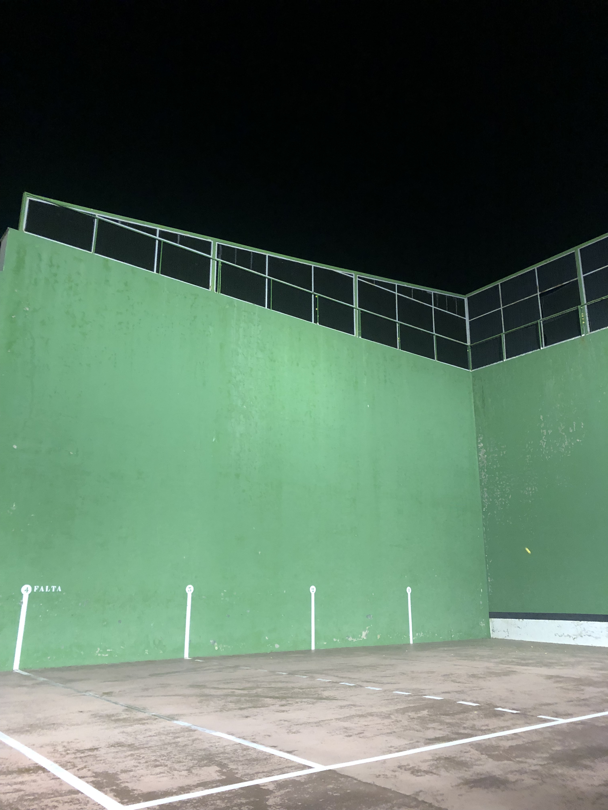

Frontón
Reflexión:
Llevo jugando a este deporte desde 2019, cuando me regalaron una raqueta por Navidad. El frontón es un deporte en el que juega una pareja contra otra y consiste en dar a una pelota para que rebote en la pared, tras lo cual el otro equipo deberá golpearla para que vuelva a rebotar, y así sigue. Es el deporte que más se juega en mi pueblo y en los pueblos cercanos. Se organizan torneos en las fiestas y todas las tardes hay gente jugando y otros expectando. Yo normalmente juego en los veranos por las tardes y algunas noches (tenemos la suerte de tener luces!) con mis amigos, y organizamos mini-torneos entre nosotros. Algunas veces jugamos contra chavales más mayores o incluso con algún adulto que quiere recordar sus tiempos mozos. Es un deporte intenso que une a todo el pueblo, todos lo juegan, ya sean niños de 10 años, adolescentes o adultos. En el frontón del pueblo todos tienen su lugar.
Resultados de aprendizaje: nºs 4 y 5.
Pruebas (únicamente tengo una foto del frontón, durante el verano conseguiré alguna en la que salga yo):
- 